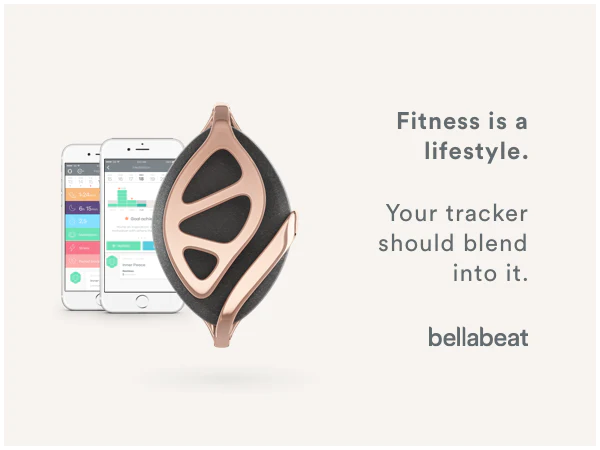
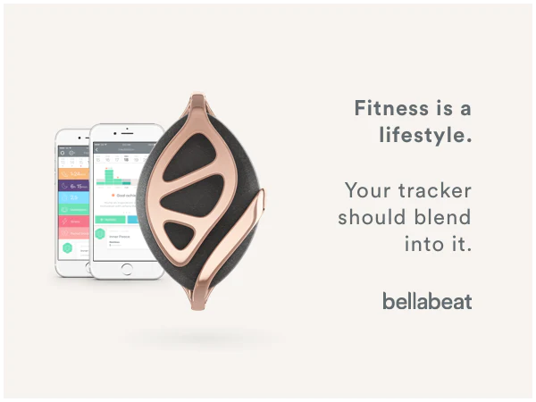

Skills: SQL
The goal of this project was to clean the sourced data on the Nashville Housing market to be in a more usuable format for analysis.
Then, investigate the data from a real estate business standpoint and identify recomendations based on the analysis.
 

Skills: Excel, R, Tableau
This project analyzed smart device usage data to gain insight into how consumers use non-Bellabeat smart devices to identify potential opportunities for growth and marketing strategies.
Skills: SQL
The goal of the project is to explore the evolution of the Lego from 1970 to 2022 and to see areas where Lego expanded and created success.

Skills: SQL
The goal of this project was to re-examine student mental health data from a prominate study done by a Japanese University to see if going to a school in another country and length of stay impacts mental health.
The study found that international students have a higher risk of mental health difficulties than the general population, and that social connectedness (belonging to a social group)
and acculturative stress (stress associated with joining a new culture) are predictive of depression. Data was provided by DataCamp.